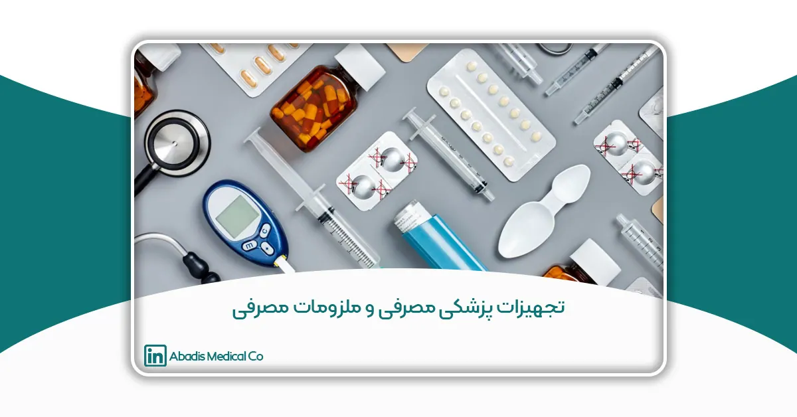
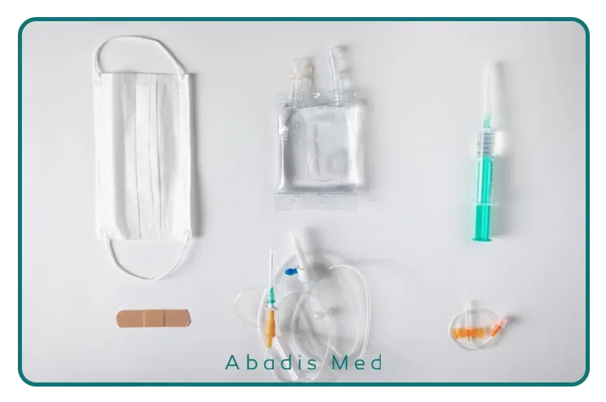
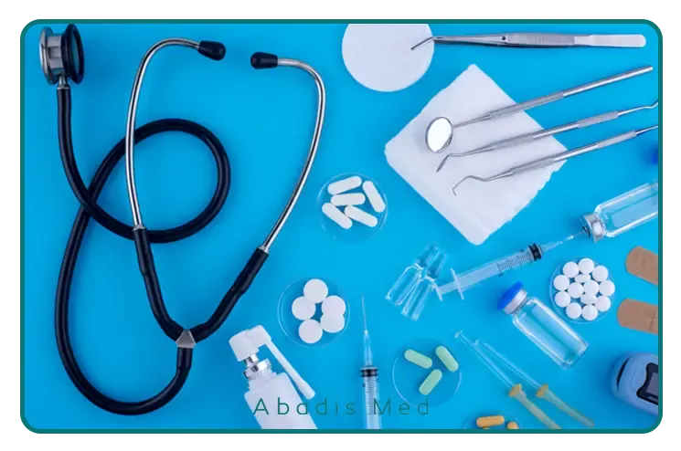

چکیده
تجهیزات و ملزومات پزشکی مصرفی از جمله مهمترین اجزای سیستمهای درمانی و بیمارستانی محسوب میشوند که تأثیر مستقیم بر کیفیت خدمات پزشکی و ایمنی بیماران دارند. این دسته از تجهیزات شامل انواع کیسههای ساکشن یکبار مصرف، سرنگها، دستکشهای پزشکی، گازهای استریل و سایر اقلام ضروری برای فرایندهای درمانی و جراحی است. انتخاب صحیح و استاندارد این تجهیزات نقش بسزایی در کاهش عفونتهای بیمارستانی و بهبود عملکرد مراکز درمانی دارد. در این مقاله، به بررسی جامع تجهیزات و ملزومات پزشکی مصرفی، ویژگیهای کلیدی، استانداردهای لازم، و تأثیر آنها بر بهبود روند درمان پرداخته خواهد شد. همچنین، اهمیت استفاده از محصولات دانشبنیان در این حوزه و نقش نوآوری در ارتقای کیفیت و کاهش هزینههای درمانی مورد بحث قرار میگیرد.
کلمات کلیدی: تجهیزات پزشکی، ملزومات پزشکی مصرفی، کیسه ساکشن یکبار مصرف، استانداردهای پزشکی، کنترل عفونت بیمارستانی، نوآوری در تجهیزات پزشکی
مقدمه
در سیستمهای درمانی و بیمارستانی، کیفیت تجهیزات و ملزومات پزشکی مصرفی تأثیر مستقیمی بر سلامت بیماران و ایمنی کادر درمان دارد. در سالهای اخیر، استفاده از تجهیزات پزشکی مصرفی و ملزومات پزشکی مصرفی به دلیل نقش حیاتی آنها در کنترل عفونتهای بیمارستانی، افزایش بهرهوری و کاهش هزینههای درمانی، بیش از پیش مورد توجه قرار گرفته است. استفاده از این تجهیزات، بهویژه محصولات یکبار مصرف، به دلیل نقش حیاتی در کنترل عفونتهای بیمارستانی، افزایش بهرهوری و کاهش هزینههای درمانی، روزبهروز اهمیت بیشتری پیدا میکند.
چرا تجهیزات پزشکی و ملزومات مصرفی اهمیت دارند؟
تجهیزات پزشکی مصرفی شامل طیف گستردهای از ابزارهای پزشکی یکبار مصرف و اقلام بهداشتی هستند که در بیمارستانها و مراکز درمانی استفاده میشوند. این محصولات نهتنها از انتقال بیماریها جلوگیری میکنند، بلکه با تسهیل فرآیندهای درمانی، کیفیت خدمات پزشکی را بهبود میبخشند و کنترل عفونت را بهصورت چشمگیری کاهش میدهند.
مطالعات معتبر نشان میدهند که استفاده از تجهیزات یکبار مصرف میتواند بهطور قابلتوجهی نرخ عفونتهای بیمارستانی را کاهش دهد. بهعنوان نمونه، پژوهشی در مجله انجمن پزشکی آمریکا (JAMA) تأیید کرده که استفاده از این تجهیزات در جراحیها، خطر عفونتهای پس از عمل را کاهش میدهد. همچنین، سازمان جهانی بهداشت (WHO) در گزارشهای خود بر اهمیت این تجهیزات در کنترل عفونتهای بیمارستانی تأکید کرده است.
اهمیت تولید ملی در تأمین تجهیزات پزشکی
در سالهای اخیر، صنعت تولید تجهیزات پزشکی در ایران رشد قابل توجهی داشته است. بسیاری از محصولات با کیفیت بالا و قیمت رقابتی در داخل کشور تولید میشوند که این امر، وابستگی به واردات را کاهش داده و امنیت تأمین تجهیزات بیمارستانی را افزایش میدهد. طبق گزارش وزارت بهداشت، حدود ۹۰٪ از تجهیزات بیمارستانی خریداریشده توسط هیئت امنا، از تولیدات داخلی بوده است. این حمایتها نهتنها به صرفهجویی ارزی کمک میکند، بلکه باعث رشد اشتغال و توسعه صنایع دانشبنیان نیز میشود.
در ادامه این مقاله، به بررسی دقیقتر انواع تجهیزات پزشکی مصرفی، نقش حیاتیشان در کنترل عفونت و بهبود فرآیندهای درمانی، و همچنین لیست کامل این محصولات خواهیم پرداخت.
تعریف تجهیزات پزشکی مصرفی و ملزومات پزشکی مصرفی
تجهیزات پزشکی مصرفی و ملزومات پزشکی مصرفی به دستهای از وسایل و ابزارهای پزشکی گفته میشود که در فرآیندهای درمانی، جراحی و مراقبتی استفاده شده و معمولاً یکبار مصرف هستند. این محصولات پس از استفاده دور ریخته میشوند تا خطر انتقال آلودگیها، عفونتها و بیماریها کاهش یابد. تفاوت این دو اصطلاح در این است که تجهیزات پزشکی مصرفی معمولاً شامل وسایل تخصصیتر و پیچیدهتری هستند که برای اهداف خاص درمانی و جراحی استفاده میشوند، درحالیکه ملزومات پزشکی مصرفی به اقلامی گفته میشود که بهعنوان لوازم جانبی و پشتیبان در فرآیندهای درمانی به کار میروند.
برخی از نمونههای این محصولات عبارتند از:
- کیسه ساکشن یکبار مصرف برای جمعآوری مایعات و ترشحات بیماران
- گان، ماسک و دستکش پزشکی برای حفظ ایمنی کادر درمان و بیماران
- سرنگ، سوزن و ستهای تزریق برای تزریق دارو و نمونهگیری
- لولههای تنفسی و کاتترها برای مدیریت راههای هوایی و کنترل مایعات بدن
- باند، گاز و پدهای استریل برای پانسمان زخمها و جلوگیری از عفونت

اهمیت تجهیزات و ملزومات پزشکی مصرفی
عفونتهای بیمارستانی (Nosocomial Infections) یکی از معضلات جدی در مراکز درمانی سراسر جهان محسوب میشوند که سالانه میلیونها بیمار را تحت تأثیر قرار داده و منجر به افزایش میزان مرگومیر، افزایش هزینههای درمانی و طولانیتر شدن مدت بستری بیماران میشوند. بر اساس گزارشهای سازمان بهداشت جهانی (WHO)، عفونتهای بیمارستانی میتوانند تا ۱۰ درصد از بیماران بستریشده در بیمارستانها را تحت تأثیر قرار دهند. این موضوع نهتنها بار سنگینی بر دوش نظامهای سلامت تحمیل میکند، بلکه کیفیت مراقبتهای درمانی را نیز تحت تأثیر قرار میدهد.
یکی از مؤثرترین راهکارها برای کاهش میزان عفونتهای بیمارستانی، استفاده از تجهیزات و ملزومات پزشکی مصرفی استاندارد و استریل است. این محصولات که عمدتاً بهصورت یکبار مصرف طراحی شدهاند، نقش مهمی در جلوگیری از انتقال میکروارگانیسمهای بیماریزا در محیطهای درمانی دارند. جایگزینی تجهیزات چندبار مصرف با تجهیزات یکبار مصرف، بهویژه در بخشهایی مانند اتاق عمل، بخش مراقبتهای ویژه (ICU)، دیالیز و اورژانس، تأثیر بسزایی در کاهش شیوع عفونتهای بیمارستانی دارد.
مزایای استفاده از تجهیزات و ملزومات پزشکی مصرفی در کنترل عفونتهای بیمارستانی
۱.کاهش انتقال عفونتهای بیمارستانی:
وسایل یکبار مصرف نیازی به استریل شدن مجدد ندارند و این موضوع احتمال آلودگی ناشی از استریلسازی ناقص را از بین میبرد.
۲.افزایش ایمنی بیماران و کادر درمان:
محصولاتی مانند کیسه ساکشن یکبار مصرف آبادیس، سرنگها، ماسکها، دستکشهای پزشکی، گانهای یکبار مصرف و تیوبهای تنفسی، نقش بسیار مهمی در حفاظت از کادر درمان و بیماران دارند. استفاده از این تجهیزات تماس مستقیم با ترشحات بیمار را کاهش داده و از انتقال عفونتهای خطرناک و عفونتهای مقاوم به آنتیبیوتیک جلوگیری میکند.
۳.بهبود کیفیت خدمات درمانی و کاهش ریسک پزشکی:
در بسیاری از موارد، تجهیزات پزشکی چندبار مصرف ممکن است بهمرور زمان دچار فرسودگی، تغییر شکل و یا آلودگیهای غیرقابل مشاهده شوند که میتواند باعث ایجاد خطاهای پزشکی و افزایش میزان عوارض درمانی گردد. استفاده از تجهیزات یکبار مصرف باکیفیت، استاندارد و بهروز باعث افزایش اطمینان پزشکان و پرستاران نسبت به عملکرد تجهیزات شده و فرآیندهای درمانی را ایمنتر و مؤثرتر میکند.
۴.کاهش هزینههای درمانی و بستری بیماران:
عفونتهای بیمارستانی هزینههای درمانی قابلتوجهی را به بیمارستانها تحمیل میکنند. هزینههای ناشی از این عفونتها شامل نیاز به بستریهای طولانیتر، استفاده از آنتیبیوتیکهای خاص و مراقبتهای ویژه میشود. تحقیقات نشان داده است که پیشگیری از عفونتهای بیمارستانی از طریق استفاده از تجهیزات یکبار مصرف، هزینههای ناشی از درمان این عفونتها را به میزان قابلتوجهی کاهش میدهد.
۵.افزایش سرعت و کارایی عملکرد کادر درمان:
استفاده از تجهیزات پزشکی مصرفی (مانند کیسه ساکشن یکبار مصرف) باعث میشود که کادر درمان دیگر نگران فرآیندهای پیچیده ضدعفونی و استریلسازی تجهیزات نباشند و بتوانند زمان بیشتری را به ارائه خدمات درمانی اختصاص دهند. این موضوع مخصوصاً در بخشهای اورژانس و ICU که نیاز به عملکرد سریع و بدون وقفه است، از اهمیت بالایی برخوردار است.
۶.کمک به پیشگیری از شیوع بیماریهای اپیدمیک و پاندمیک:
در دورههایی مانند همهگیری COVID-19، استفاده از تجهیزات و ملزومات پزشکی مصرفی نقش مهمی در کنترل انتقال بیماری ایفا کرد. بهکارگیری ماسکها، گانهای محافظتی، سرنگهای یکبار مصرف، کیسههای ساکشن یکبار مصرف آبادیس و کیتهای تشخیصی استریل، توانست از افزایش میزان عفونت جلوگیری کرده و سلامت عمومی را حفظ کند.

بهطور کلی، تجهیزات و ملزومات پزشکی مصرفی، ستون اصلی پیشگیری از عفونتهای بیمارستانی و بهبود کیفیت مراقبتهای درمانی محسوب میشوند. استفاده از این محصولات علاوه بر کاهش نرخ ابتلا به عفونتهای بیمارستانی، باعث افزایش ایمنی بیماران و کادر درمان، کاهش هزینههای درمانی، بهبود عملکرد مراکز درمانی و ارتقای سطح سلامت عمومی جامعه خواهد شد.
استفاده از تجهیزات و ملزومات پزشکی مصرفی استاندارد و استریل، نقشی اساسی در کنترل عفونتهای بیمارستانی و بهبود کیفیت مراقبتهای پزشکی دارد. شرکت مخازن طبی آبادیس، با تولید و عرضه تجهیزات پزشکی مصرفی، بهویژه کیسه ساکشن یکبار مصرف، سهم مهمی در ارتقای سطح بهداشت و ایمنی بیمارستانهای کشور دارد و به کاهش عفونتهای بیمارستانی و افزایش سلامت بیماران و کادر درمان کمک میکند.
تولید و تأمین این تجهیزات در داخل کشور میتواند دسترسی سریعتر و مقرونبهصرفهتری را برای بیمارستانها و مراکز درمانی فراهم کند و وابستگی به واردات را کاهش دهد.
شرکتهای دانشبنیان ایرانی، مانند شرکت دانشبنیان مخازن طبی آبادیس، با بهرهگیری از فناوریهای نوین و رعایت استانداردهای کیفی، سهم قابلتوجهی در تولید تجهیزات پزشکی مصرفی دارند. این شرکتها علاوه بر تأمین نیازهای داخلی، در صادرات تجهیزات پزشکی مصرفی به کشورهای همسایه نیز نقش مهمی ایفا میکنند که این امر به رشد اقتصاد حوزه سلامت کشور کمک میکند.
در مجموع، توسعه تولید داخلی در حوزه تجهیزات پزشکی مصرفی، نهتنها باعث افزایش کیفیت خدمات درمانی و کاهش هزینههای بیمارستانی میشود، بلکه زمینه را برای کاهش عفونتهای بیمارستانی و ارتقای ایمنی بیماران و کادر درمان نیز فراهم میکند.
چگونه بهترین تجهیزات و ملزومات پزشکی مصرفی را انتخاب کنیم؟
انتخاب تجهیزات و ملزومات پزشکی مصرفی مناسب نیازمند توجه به فاکتورهای مختلفی است که میتواند تأثیر زیادی بر کیفیت خدمات درمانی و ایمنی بیماران و کادر درمانی داشته باشد.
برای انتخاب بهترین تجهیزات و ملزومات پزشکی مصرفی، توجه به برند معتبر، کیفیت مواد اولیه، تأییدیههای بهداشتی و استانداردهای بینالمللی مانند ISO، CE و IMED، نوع استفاده، استانداردهای ایمنی و قیمت از اهمیت ویژهای برخوردار است. شرکت مخازن طبی آبادیس با تولید محصولات با کیفیت، مانند کیسه ساکشن یکبار مصرف، توانسته است استانداردهای جهانی و ملی را رعایت کرده و نیازهای بیمارستانها و مراکز درمانی کشور را برآورده سازد.
تمامی محصولات و ملزومات پزشکی مصرفی: معرفی و فهرست جامع
در این مقاله به بررسی و معرفی تجهیزات پزشکی مصرفی و ملزومات پزشکی مصرفی پرداختهایم که در مراکز درمانی و بیمارستانها برای بهبود فرآیندهای درمانی، کنترل عفونتها و افزایش ایمنی بیماران و کادر درمانی استفاده میشوند. این محصولات شامل مجموعهای از تجهیزات و ملزومات هستند که استانداردهای بهداشتی و ایمنی بینالمللی و ملی را رعایت کرده و نقش مهمی در ارائه خدمات درمانی مؤثر دارند.
برای آشنایی دقیقتر با تمامی تجهیزات و ملزومات پزشکی مصرفی که تحت نظارت اداره کل تجهیزات پزشکی قرار دارند و مورد تایید این سازمان هستند، میتوانید به فایل زیر مراجعه کنید. این فایل شامل فهرست کاملی از محصولات تأییدشده، نام شرکتهای تولیدکننده، و دستهبندیهای مختلف است که به شما کمک میکند در انتخاب محصولات مناسب برای مراکز درمانی و بیمارستانی، با توجه به استانداردهای ملی و جهانی، تصمیمگیری کنید.
برای مشاهده فهرست کامل تجهیزات و لوازم پزشکی مصرفی کلیک کنید.
نتیجهگیری
تجهیزات و ملزومات پزشکی مصرفی، بهویژه آنهایی که برای جلوگیری از عفونتهای بیمارستانی و تضمین ایمنی بیمار و کادر درمانی طراحی شدهاند، بخش اساسی از مراقبتهای بهداشتی و درمانی محسوب میشوند. این محصولات با ویژگیهایی چون یکبار مصرف بودن، استریل بودن و کیفیت بالا، از انتقال بیماریها جلوگیری کرده و بهطور مستقیم بر بهبود کیفیت خدمات درمانی تأثیر میگذارند.
اهمیت تولید و تأمین این تجهیزات از طریق شرکتهای داخلی، مانند مخازن طبی آبادیس، در راستای خودکفایی کشور و کاهش وابستگی به واردات، نقشی حیاتی دارد. این شرکتها با ارائه محصولاتی که مطابق با استانداردهای ملی و بینالمللی هستند، به حل چالشهای بهداشتی کمک کرده و موجب ارتقاء سلامت جامعه و افزایش ایمنی در مراکز درمانی میشوند.
در پایان، انتخاب صحیح و هوشمندانه این محصولات در بیمارستانها و مراکز درمانی، بر مبنای کیفیت، استانداردها و نیازهای خاص هر محیط، میتواند به کاهش هزینههای درمانی، بهبود سرعت بهبودی بیماران و ارتقاء سطح کلی خدمات پزشکی در کشور کمک نماید.